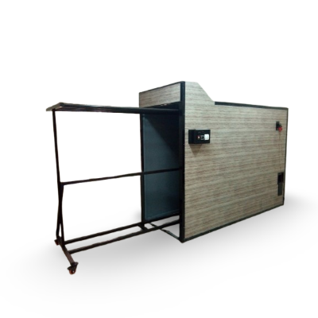

Cabine de sechage
- Capacités disponibles : 12 tapis et 25 tapis
- Structure : conteneur en tube d'acier inoxydable, complètement isolé avec un panneau sandwich de 4 cm
- Ventilation : ventilateur de 80 cm de diamètre, positionné à gauche
- Déshumidification : intégré pour optimiser le séchage
- Barres de suspension : conçues pour des tapis de 4 mètres de large, ancrées sur des chaînes de convoyeurs à déplacement manuel
- Portes : porte avant pour faciliter le chargement et le déchargement des tapis
- Économie d'énergie : système de séchage parmi les moins consommateurs du marché
- Temps de séchage complet : 20 heures maximum (réduit à 12 heures pour des tapis fins et en quantité réduite)
Avantage
Données techniques
| Caractéristique | Détail |
|---|---|
| Sèche-linge | 12 tapis |
| Dimensions | longueur 6,10m, largeur 1,20m. haut 2m. |
| Puissancer | 2kw |
| Poids | 500 kg |